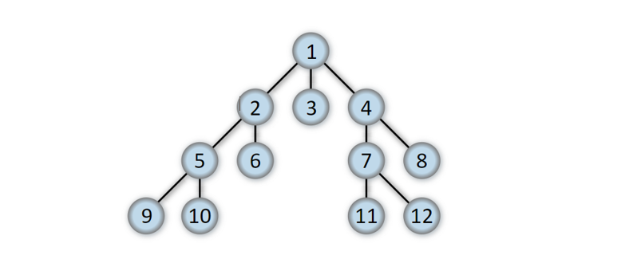

Concepto
En la lingüística, un grafo es un objeto unitario de naturaleza abtracta que abarca a las grafias que componen una letra.
Grafos
Un grafo consiste de un conjunto V de vértices (o nodos) y un conjunto E de arcos que conectan a esos vértices.
Grafos Simples:
Un grafo es simple si a lo más existe una arista uniendo dos vértices cualquiera. Esto es equivalente a decir que una arista cualquiera es la única que une dos vértices específicos.

Grafos Conexos
Un grafo es conexo si cada par de vértices está conectado por un camino; es decir, si para cualquier par de vértices (a, b), existe al menos un camino posible desde a hacia b.
Aristas
Una arista es una relación entre dos vértices de un grafo.
Aristas adyacentes: Estas son dos aristasque dirigen hacia el mismo vértice y se juntan en
él
Aristas Paralelas: Estas son dos aristas donde el vértice inicial y el vértice final son
uno mismo.
Aristas Dirigidas:
Una arista dirigida es una arista de un digrafo y tiene una dirección asociada consigo, este posee un vértice inicial y un vértice final.
Arista No Dirigida:
Es un tipo de grafo en el cual las aristas representan relaciones simétricas y no tienen un sentido definido.
Recorrido de un grafo
La operación de recorrer una estructura de datos consiste en visitar (procesar) cada uno
de los nodos a partir de uno dado. Así, para recorrer un árbol se parte del nodo raíz y
según el orden se visitan todos los vértices alcanzables a partir de uno dado.
Hay dos formas de recorrer un grafo:
Recorrido en profundidad y recorrido en anchura.
Si el conjunto de nodos marcados se trata como una cola, entonces el recorrido es en anchura; si se trata como una pila, el recorrido es en profundidad.
Camino Minimo
El problema del camino mínimo es que consiste en hallar la mejor forma de ir desde un punto a otro (o a varios puntos) minimizando la distancia recorrida, el tiempo invertido, entre varias posibilidades.
Algoritmo de Dijkstra
- El algoritmo calcula las distancias mínimas desde un nodo inicial a todos los demás. Para hacerlo, en cada paso se toma el nodo más cercano al inicial que aún no fue visitado (le diremos v). Este nodo tiene calculada la menor distancia al nodo inicial.
- Luego, recalculamos todos los caminos mínimos, teniendo en cuenta a v como camino intermedio.
- Así, en cada paso tendremos un subconjunto de nodos que ya tienen calculada su mínima distancia y los demás tienen calculada su minima distancia si solo puedo usar los nodos del conjunto como nodos intermedios.
- Con cada iteración agregaremos un nodo más a nuestro conjunto, hasta resolver el problema en su totalidad.

Se puede aplicar los grafos en:
- Elaboración de mapas.
- Aplicaciones matemáticas.
- Caminos a menor costo.
- Información geográfica.
- Saber cuanta población existe en territorio.
- Red de carreteras.
- Red eléctrica.
- Sistemas de alcantarillados.
Recorrido y búsquedas
La operación de recorrer una estructura de datos consiste en visitar (procesar) cada uno de los nodos a partir de uno dado. Así, para recorrer un árbol se parte del nodo raíz y según el orden se visitan todos los nodos. De igual forma, recorrer un grafo consiste en visitar todos los vértices alcanzables a partir de uno dado.
- Hay dos formas de recorrer un grafo: recorrido en profundidad (DFS) y recorrido en anchura (BFS)
Recorrido (o búsqueda) en amplitud (breadth-first search):
- Se visita a todos los vecinos directos del nodo inicial, luego a los vecinos de los vecinos, etc.
- El recorrido de búsqueda en anchura, en amplitud o expansión, es unaestrategia aplicable indistintamente al caso de grafos dirigidos y no dirigidos.
- El recorrido en anchura es una generalización del recorrido por niveles de un árbol.
- Se trata de visitar un nodo inicial y luego a todos los nodos que están a un arco de distancia de éste, luego a todos los nodos que están a dos arcos de distancia de éte y así sucesivamente, hasta alcanzar a todos los nodos a los que se pueda llegar desde el nodo inicial.
- Una aplicación típica de este recorrido es la resolución de problemas de planificación.
- La búsqueda en amplitud se puede utilizar para hallar la distancia más corta entre algún nodo inicial y los nodos restantes del grafo. Esta distancia más corta es el mínimo número de arista que hay que recorrer para pasar desde el nodo inicial hasta el nodo concreto que se esté examinando.
Recorrido (o búsqueda) en profundidad (depth-first search):
- La idea es alejarse lo más posible del nodo inicial (sin repetir nodos), luego devolverse un paso e intentar lo mismo por otro camino.
- Este método es una forma básica de recorrer un grafo implementado recursividad.
- En este recorrido se basan los recorridos preorden y postorden para árboles binarios.
- Supóngase que una persona se encuentra en algún sistema de cuevas interconectadas, o en un laberinto, en una cierta intersección (o nodo), y que se le pide a esta persona que busque la salida, que se encuentra en un determinado nodo. En esta búsqueda se podría emplear varias opciones.
- Una posibilidad que probablemente no se utilizase sería la búsqueda en amplitud.
- Intuitivamente, una estrategia que comienza en algún nodo de la cueva y que despues visita.
- Todos y cada uno de los nodos adyacentes siguientes de la cueva, no parece demasiado.
- Prometedora.
El Problema del Camino Minimo
- En la teoría de grafos, el problema del camino más corto es el problema que consiste en encontrar un camino entre dos vértices o nodos, de tal manera que la suma de los pesos de las aristas que lo constituyen sea mínima. Al camino más corto entre dos vértices también se le conoce como geodésia.
- Este problema no necesariamente tiene una única solución. Además, tiene diversas aplicaciones. Un ejemplo es encontrar el camino más rápido para ir de una ciudad a otra en un mapa. En este caso, los vértices representarían las ciudades y las aristas las carreteras que unen, cuya ponderación viene dada por el tiempo que se emplea en atravesarlas.
- El problema de los puentes de Königsberg, también llamado más específicamente problema de los siete puentes de Königsberg, es un célebre problema matemático resuelto por Leonhard Euler en 1736 y cuya resolución dio origen a la teoría de grafos.
- Dado el mapa de Königsberg, con el río Pregel dividiendo el plano en cuatro regiones distintas, que están unidas a través de los siete puentes, ¿es posible dar un paseo comenzando desde cualquiera de estas regiones, pasando por todos los puentes, recorriendo solo una vez cada uno, y regresando al mismo punto de partida?
Grafos Acíclicos
- Un grafo acíclico dirigido o DAG es un grafo dirigido que no tiene ciclos; esto significa que para cada vértice v, no hay un camino directo que empiece y termine en v. Los DAG aparecen en modelos donde no tiene sentido que un vértice tenga un camino directo a él mismo.
- Una fuente es un vértice sin relaciones de entrada, mientras que un sifón o sumidero es un vértice sin relaciones de salida.
- Un DAG finito tiene por lo menos una fuente y un sifón.
- La profundidad de un vértice, en un DAG finito, es la longitud del camino más larga del camino que exista desde el vértice a un sifón.
- La longitud de un DAG finito es el número de arcos del camino directo más largo. Dicho número es igual a la máxima altura de todas las fuentes e igual a la máxima profundidad de todos los sifones.
Aplicación de grafos
- La teoría de un grafo es usada en diferentes áreas.
- Gracias a la teoría de grafos se pueden resolver diversos problemas.
- Los grafos se utilizan tambiém para modelar trayectos.
- Para la administración de proyectos.
- Una importante aplicacion de la teoría de grafos es en el campo de la informática.